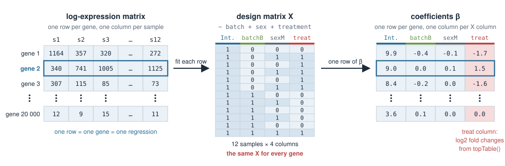
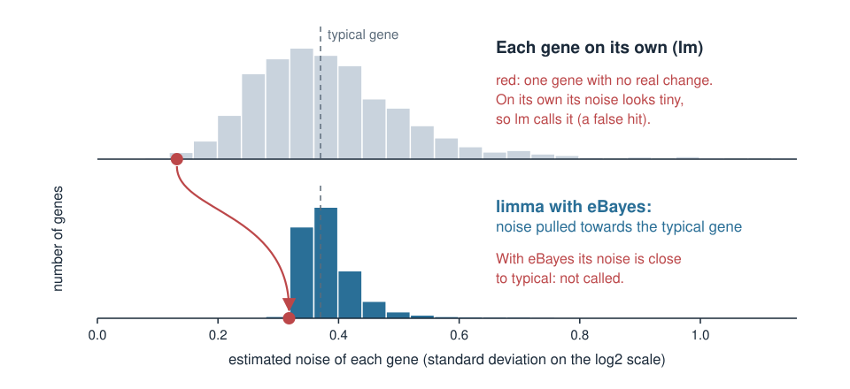
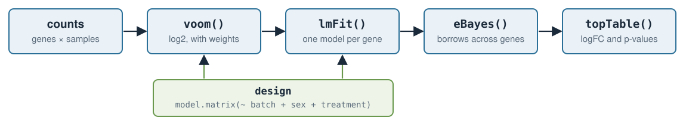
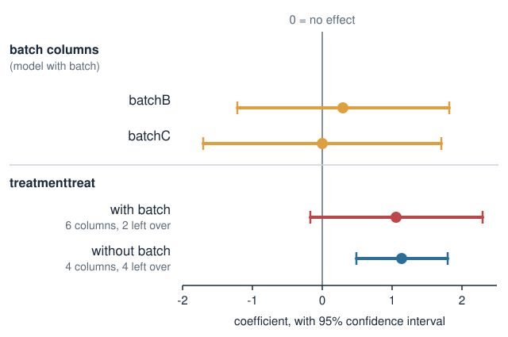
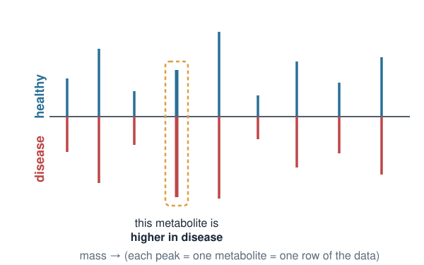
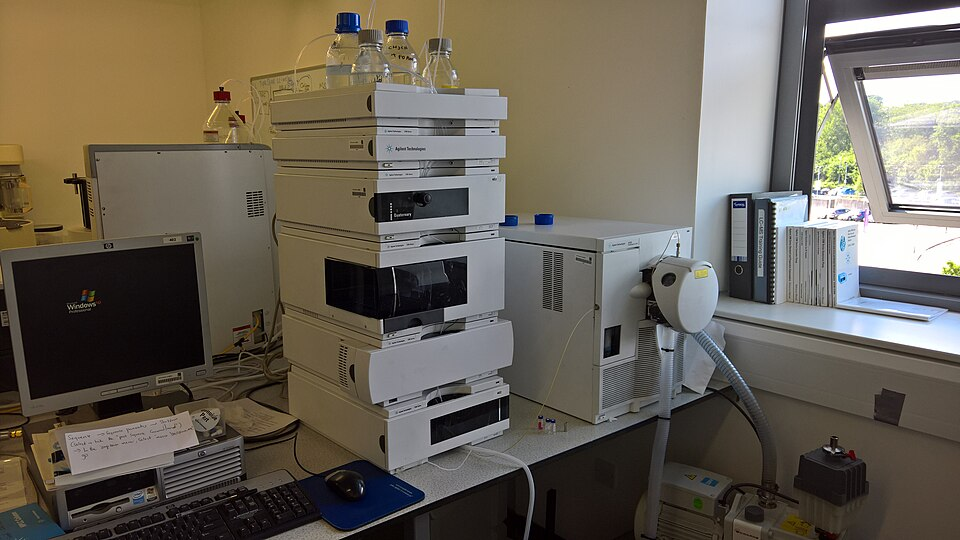

Week 3 — Many genes at once: limma

lm(expr ~ batch + sex + treatment) and read the treatment coefficient. On the log2 scale it is a log2 fold change (logFC): 1 = doubled, -1 = halved.lm over the genes runs, but gives poor answersSimulated RNA-seq: 2000 genes, 12 samples, and we know that 200 genes truly respond to treatment.
y <- log2(counts + 1) # genes x samples, log2 scale
coef(summary(lm(y["g5", ] ~ batch + sex + treatment, data = samples)))["treatmenttreat", ]
# Estimate Std. Error t value Pr(>|t|)
# 2.27 0.20 11.27 3.5e-06 # one gene: clearly up
p <- apply(y, 1, function(yg) # the same fit for every row
coef(summary(lm(yg ~ batch + sex + treatment, data = samples)))["treatmenttreat", 4])
sum(p < 0.05)
# [1] 277277 genes with p < 0.05, but only 200 genes respond. Two problems:
p.adjust(p, "BH"). Then among the genes called at < 0.05, only about 5% are false. limma reports this as adj.P.Val.| cut-off | genes called | truly respond | false |
|---|---|---|---|
p < 0.05 |
277 | 186 | 91 |
adjusted < 0.05 |
131 | 124 | 7 |

eBayes uses that most genes are about equally noisy: each gene’s noise is pulled towards the typical gene. Each gene borrows information from all the others.lm loop finds 124 of the 200 genes (7 false), limma finds 181 (10 false).model.matrix() builds the design limma needsd <- data.frame(
treatment = c("ctrl", "ctrl", "ctrl", "treat", "treat", "treat"),
sex = c("F", "M", "F", "M", "F", "M"),
bmi = c(22, 25, 28, 24, 27, 30))
X <- model.matrix(~ treatment + sex, data = d)Input: the table d
| treatment | sex | bmi | |
|---|---|---|---|
| 1 | ctrl | F | 22 |
| 2 | ctrl | M | 25 |
| 3 | ctrl | F | 28 |
| 4 | treat | M | 24 |
| 5 | treat | F | 27 |
| 6 | treat | M | 30 |
→
Output: X, one row per sample
| (Intercept) | treatmenttreat | sexM | |
|---|---|---|---|
| 1 | 1 | 0 | 0 |
| 2 | 1 | 0 | 1 |
| 3 | 1 | 0 | 0 |
| 4 | 1 | 1 | 1 |
| 5 | 1 | 1 | 0 |
| 6 | 1 | 1 | 1 |
treatmenttreat, sexM. limma asks for a coefficient by this name.ctrl, F) get no column. Check levels() first: real data often has trt and untrt, and trt sorts first. Fix with relevel(x, ref = "untrt").Now suppose all controls were sequenced in batch A and all treated samples in batch B.
d$batch <- c("A", "A", "A", "B", "B", "B")
X <- model.matrix(~ batch + treatment, data = d)
X[, ]
# (Intercept) batchB treatmenttreat
# 1 1 0 0
# 2 1 0 0
# 3 1 0 0
# 4 1 1 1
# 5 1 1 1
# 6 1 1 1
ncol(X) # 3 coefficients to estimate
# the rank: how many columns are independent? Three ways, same answer
qr(X)$rank # 2 (base R, as in Linear systems in R)
Matrix::rankMatrix(X) # 2 (Matrix package, comes with R)
limma::is.fullrank(X) # FALSE -> rank < ncol(X): no unique solutionbatchB and treatmenttreat are identical columns: perfect confounding (Confounding & Simpson’s paradox).Coefficients not estimable: treatmenttreat and gives NA. Dropping batch silences it but does not fix it: only a new experiment with both conditions in every batch can.ncol(X) means infinitely many \boldsymbol\beta fit equally well, as in Linear systems in R. Use whichever function you like: qr(X)$rank, Matrix::rankMatrix, or limma’s yes/no version is.fullrank.library(limma)
# counts: 2000 genes x 12 samples; samples: one row per sample (batch, sex, treatment)
design <- model.matrix(~ batch + sex + treatment, data = samples)
v <- voom(counts, design) # RNA-seq counts -> log2 scale, with weights
fit <- lmFit(v, design) # one linear model per gene
fit <- eBayes(fit) # share noise information across genes
topTable(fit, coef = "treatmenttreat", number = 3)
# logFC AveExpr t P.Value adj.P.Val
# g5 2.20 10.83 8.05 1.0e-12 2.0e-09
# g188 -1.97 10.02 -6.88 3.8e-10 2.2e-07
# g145 -1.87 11.57 -6.86 4.2e-10 2.2e-07lmFit is the loop, eBayes the shared noise, topTable the adjusted list. coef = is a column name of X: treatmenttreat.voom is only needed for RNA-seq counts: it takes the log2 and records how noisy each value is. Data that are already log2 intensities (proteomics, metabolomics) go straight into lmFit.
tt <- topTable(fit, coef = "treatmenttreat", number = Inf) # all genes, best first
head(tt, 5)
# logFC AveExpr t P.Value adj.P.Val
# g5 2.20 10.83 8.05 1.01e-12 2.03e-09
# g188 -1.97 10.02 -6.88 3.84e-10 2.19e-07
# g145 -1.87 11.57 -6.86 4.19e-10 2.19e-07
# g144 1.94 9.82 6.83 4.90e-10 2.19e-07
# g17 1.96 9.64 6.80 5.51e-10 2.19e-07
sum(tt$adj.P.Val < 0.05)
# [1] 188| column | meaning |
|---|---|
logFC |
the treatment coefficient: treat vs ctrl, holding batch and sex fixed |
AveExpr |
the gene’s average log2 expression |
t, P.Value |
the test of “coefficient = 0” for this gene |
adj.P.Val |
adjusted for testing 2000 genes: about 5% of the genes called at < 0.05 are false |
One gene in 8 mice. The sample sheet has sex, BMI and sequencing batch. Should batch go in the model?
| treatment | sex | bmi | batch | expr |
|---|---|---|---|---|
| ctrl | F | 26 | A | 8.9 |
| ctrl | M | 23 | B | 9.5 |
| ctrl | F | 28 | C | 8.5 |
| ctrl | M | 27 | A | 9.2 |
| treat | F | 30 | B | 10.2 |
| treat | M | 27 | C | 10.7 |
| treat | F | 21 | A | 9.1 |
| treat | M | 24 | B | 10.5 |

batchB and batchC are close to 0, with intervals on both sides of 0: batch explains nothing here.Mass spectrometry gives log2 intensities directly, so there is no voom. In the exercise, 150 metabolites in 8 healthy and 8 disease samples; the patients have a higher BMI, and 20 metabolites truly change with disease.
design <- model.matrix(~ group + sex + bmi + day, data = meta)
fit <- eBayes(lmFit(logint, design))
topTable(fit, coef = "groupdisease")| design | called | true | false |
|---|---|---|---|
~ group |
28 | 15 | 13 |
~ group + sex + bmi + day |
12 | 12 | 0 |
bmi is a continuous covariate: one column of numbers. day is the MS run day, a batch.bmi, metabolites that only follow BMI look like disease markers.

Photo: Nick Birse, CC BY-SA 4.0, via Wikimedia Commons.
model.matrix(~ ...).lm has two problems: many false hits and badly estimated noise per gene.voom for counts) + design → lmFit() (the loop) → eBayes() (shared noise) → topTable(coef = ...) (adjusted list).logFC (1 = doubled) and adj.P.Val (about 5% of the calls at < 0.05 are false).levels() and the rank of X. “Coefficients not estimable” can only be fixed by the experiment.Next: Bulk RNA-seq with DESeq2: the same design, but starting from the raw counts.